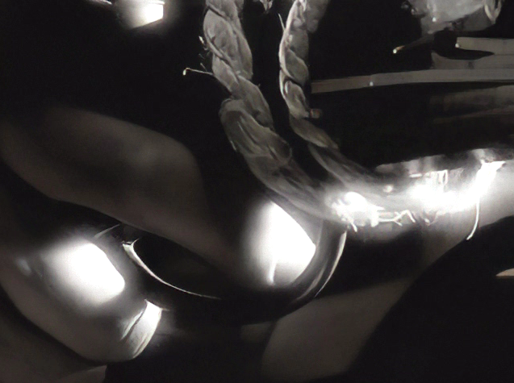
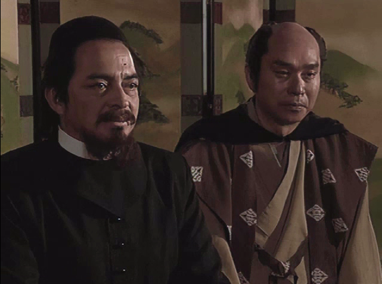
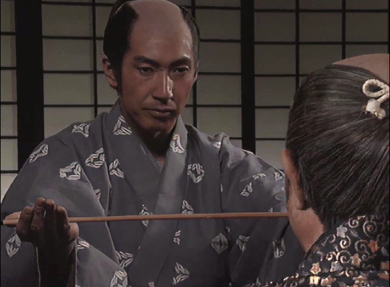
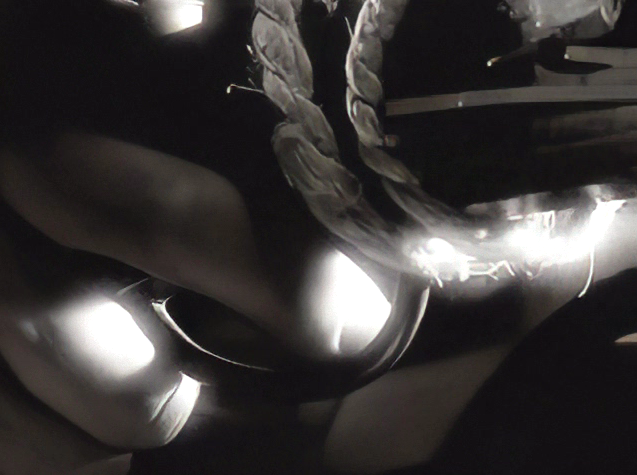
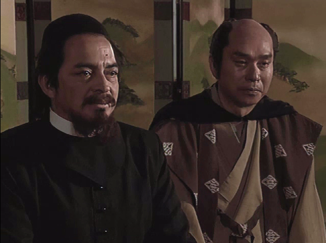
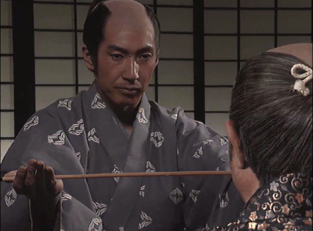
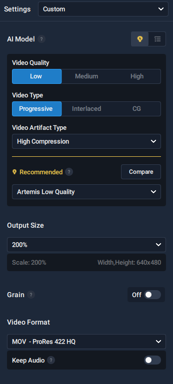

概要
全節はwaifu-2x-cafeeにより２倍にしましたが、
非常に時間がかかる上、効果も微妙に感じたかたも居られると思います。
有料ツールとはなりますが、「Topaz Video Enhance AI」を利用するとムービーをとても美しく２倍に出来ます。





全節はwaifu-2x-cafeeにより２倍にしましたが、
非常に時間がかかる上、効果も微妙に感じたかたも居られると思います。
有料ツールとはなりますが、「Topaz Video Enhance AI」を利用するとムービーをとても美しく２倍に出来ます。




これにより上手く修復され、２倍化された「mp4」が出来上がります。
この２つを結合して１つにします。
単純にffmpegでコンソールにて単純に映像と音声を連結するだけでは、
20年前のアプリ基準でのヘッダファイルとしては適切ではないため、
正規化する必要があります。
天翔記で利用可能な.AVIフォーマットへの変換方法 と同じやり方となります。
映像のサイズは640x480そのままとなります。
「映像ソース」には「.avi」、「音声ソース」には「.wav」を指定しましょう。
音声ファイルの出力時の周波数は「44100 Hz」で良いでしょう。
将星録で再生出来るフォーマットとなります。